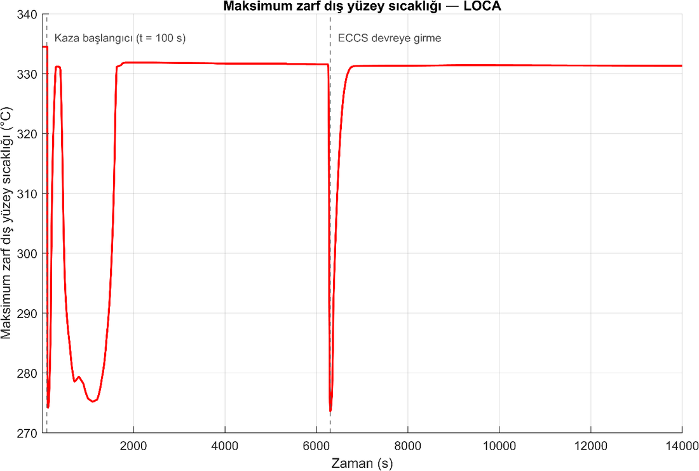

Soğutucu kaybı kazası (LOCA)
100. saniyede bir hat kırılıyor ve normal elektrik kesiliyor. Reaktör 110. saniyede duruyor, ECCS vanaları 6281. saniyede kendiliğinden açılıyor. 14 000 saniyelik hesap boyunca en sıcak yakıt zarfı yaklaşık 330 °C'de kaldı; sınır 1204 °C.
